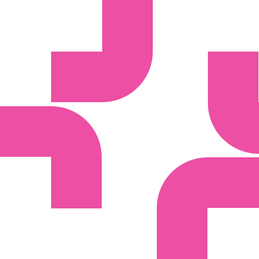
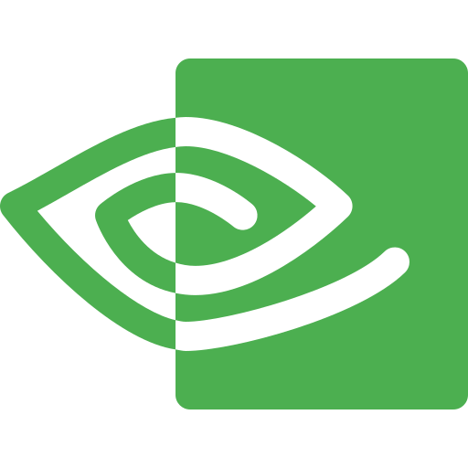

GeoMind
GeoAI is fragmented. We help you discover, understand, and reproduce state-of-the-art research.
Papers with Code
| Paper with Code title | Citations | Stars | Venue / Year |
|---|
Explore geospatial foundation models.
As foundation models continue to improve, the lack of relevant context often limits what they can do, especially as they are used to build agentic systems. While these models can help process geospatial data, understand Earth observation imagery, identify patterns, and support decision-making workflows, they still need the right information to produce accurate and actionable results.
Discover more foundation models AlphaEarth Foundations
10 m · global/yr
Google DeepMind · Global embeddings
AlphaEarth Foundations
10 m · global/yr
Google DeepMind · Global embeddings

 SAM (Segment Anything)
636M · ViT-H
Meta · Promptable segmentation
SAM (Segment Anything)
636M · ViT-H
Meta · Promptable segmentation
 SatCLIP
Location encoder
Microsoft · Location embeddings
SatCLIP
Location encoder
Microsoft · Location embeddings

OlmoEarth Up to 300M Ai2 · Earth observation model TESSERA
128-d · 10 m
University of Cambridge · EO embeddings
TESSERA
128-d · 10 m
University of Cambridge · EO embeddings
 DINOv3 (satellite)
Frozen ViT · RGB
Meta · Vision backbone
Aurora
1.3B · Earth system
Microsoft · Atmospheric forecasting
DINOv3 (satellite)
Frozen ViT · RGB
Meta · Vision backbone
Aurora
1.3B · Earth system
Microsoft · Atmospheric forecasting

Earth-2 Weather · GPU NVIDIA · Climate simulation Granite Geospatial
Prithvi-based
IBM · Specialized EO models
Granite Geospatial
Prithvi-based
IBM · Specialized EO models
Datasets & Benchmarks
Always in the loop
Stay close to the organizations building geospatial AI, Earth observation systems, and climate intelligence products.
No noise, just relevant GeoAI roles
Track opportunities from labs, startups, public agencies, and product teams working on remote sensing, maps, climate, autonomy, and spatial data infrastructure.